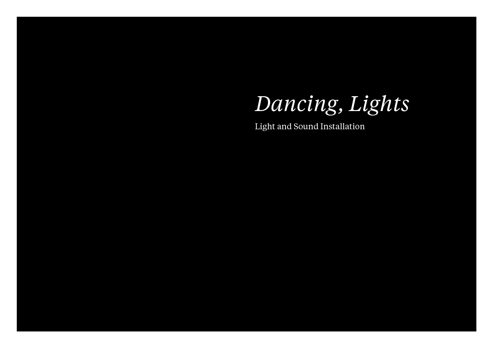

A Light and sound Installation
Coursework: Interaction, Media and Senses
Brief: To create an interactive installation that engages multiple senses.
Team: Abhijith KR and Chandni Rajendran
Course Guide: Prof. Ravi Poovaiah
Concept: An immersive, kinesthetic experience involving light, sound, and motion.
We built a small prototype of one string unit, made it respond to touch. Video below.
Had big plans of making it generate music based on degree of motion and movement patterns. Some day.